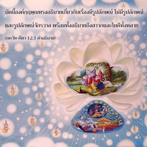

อรฺชุน ทรงถามว่า ระหว่างพวกที่ปฏิบัติการอุทิศตนเสียสละรับใช้แด่พระองค์อย่างถูกต้องเสมอ และพวกที่บูชา พฺรหฺมนฺ อันไร้รูปลักษณ์ที่ไม่ปรากฏ พิจารณาว่าพวกไหนสมบูรณ์กว่ากัน

บัดนี้องค์กฺฤษฺณทรงอธิบายเกี่ยวกับเรื่องมีรูปลักษณ์ ไม่มีรูปลักษณ์ และรูปลักษณ์จักรวาล พร้อมทั้งอธิบายถึงสาวกและโยคีทั้งหลาย โดยทั่วไปนักทิพย์นิยมแบ่งออกเป็นสองพวก พวกหนึ่งไม่เชื่อในรูปลักษณ์และอีกพวกหนึ่งเชื่อในรูปลักษณ์ สาวกผู้เชื่อในรูปลักษณ์ปฏิบัติด้วยพลังงานทั้งหมดเพื่อรับใช้องค์ภควานฺ ผู้ไม่เชื่อในรูปลักษณ์มีการปฏิบัติเช่นกันโดยการทำสมาธิอยู่ที่ พฺรหฺมนฺ อันไร้รูปลักษณ์ที่ไม่ปรากฏแต่จะไม่รับใช้องค์กฺฤษฺณโดยตรง
เราพบในบทนี้ว่าในวิธีการต่างๆเพื่อรู้แจ้งสัจธรรม ภกฺติ-โยค หรือการอุทิศตนเสียสละรับใช้เป็นวิธีที่สูงสุด หากผู้ใดปรารถนามาอยู่ใกล้ชิดกับบุคลิกภาพสูงสุดแห่งพระเจ้าผู้นั้นจะต้องปฏิบัติการอุทิศตนเสียสละรับใช้
พวกที่บูชาองค์ภควานฺโดยตรงด้วยการอุทิศตนเสียสละรับใช้เรียกว่าพวกเชื่อในรูปลักษณ์ พวกปฏิบัติสมาธิอยู่ที่ พฺรหฺมนฺ อันไร้รูปลักษณ์เรียกว่าพวกไม่เชื่อในรูปลักษณ์ ณ ที่นี้ อรฺชุน ทรงถามว่าสถานภาพไหนดีกว่ากัน มีวิธีต่างๆเพื่อรู้แจ้งสัจธรรมแต่องค์กฺฤษฺณทรงแสดงในบทนี้ว่า ภกฺติ-โยค หรือการอุทิศตนเสียสละรับใช้ต่อพระองค์เป็นสิ่งที่สูงสุดเป็นสิ่งที่โดยตรงที่สุดโดยตรงและเป็นวิธีที่ง่ายที่สุดเพื่อมาอยู่ใกล้ชิดกับองค์ภควานฺ
ในบทที่สองของ ภควัท-คีตา องค์ภควานฺทรงอธิบายว่าสิ่งมีชีวิตไม่ใช่ร่างวัตถุ แต่เป็นละอองอณูทิพย์และสัจธรรมเป็นส่วนทิพย์ที่สมบูรณ์ ในบทที่เจ็ดองค์ภควานฺทรงแนะนำว่าสิ่งมีชีวิตในฐานะที่เป็นละอองอณูของส่วนที่สมบูรณ์สูงสุด จึงควรย้ายความสนใจทั้งหมดไปสู่ส่วนที่สมบูรณ์ จากนั้นในบทที่แปดได้กล่าวไว้ว่าหากผู้ใดระลึกถึงองค์กฺฤษฺณในขณะที่ออกจากร่างวัตถุจะย้ายไปสู่ท้องฟ้าทิพย์ที่พระตำหนักของพระองค์โดยทันที และในตอนท้ายของบทที่หกองค์ภควานฺตรัสอย่างชัดเจนว่าในบรรดาโยคีทั้งหลายผู้ที่ระลึกถึงองค์กฺฤษฺณภายในตนเองเสมอพิจารณาว่าเป็นผู้ที่สมบูรณ์สูงสุด ดังนั้นในทุกๆบทจะเห็นข้อสรุปว่าเราควรยึดมั่นอยู่ที่รูปลักษณ์ส่วนพระองค์ขององค์กฺฤษฺณ เพราะนั่นคือความรู้แจ้งทิพย์ที่สูงสุด
อย่างไรก็ดีมีพวกที่ไม่ยึดมั่นอยู่กับรูปลักษณ์ส่วนพระองค์ขององค์กฺฤษฺณ ไม่ยึดมั่นอย่างแน่วแน่แม้ในการเตรียมคำอธิบาย ภควัท-คีตา แต่ต้องการทำให้ผู้คนไขว้เขวไปจากองค์กฺฤษฺณเพื่อเปลี่ยนย้ายการอุทิศตนเสียสละทั้งหมดไปที่ พฺรหฺม-โชฺยติรฺ ซึ่งไร้รูปลักษณ์ และชอบทำสมาธิอยู่กับสิ่งที่ไม่มีรูปลักษณ์แห่งสัจธรรมมากกว่าซึ่งอยู่เกินเอื้อมของประสาทสัมผัสและไม่เป็นที่ปรากฏ
อันที่จริงมีนักทิพย์นิยมอยู่สองกลุ่ม บัดนี้ อรฺชุน ทรงพยายามสรุปคำถามว่าวิธีใดง่ายกว่ากันและกลุ่มไหนสมบูรณ์ที่สุด อีกนัยหนึ่งท่านทำให้สถานภาพของท่านเองกระจ่างขึ้นเนื่องจากท่านยึดมั่นอยู่กับรูปลักษณ์ส่วนพระองค์ขององค์กฺฤษฺณ อรฺชุน ทรงไม่ยึดติดอยู่กับ พฺรหฺมนฺ อันไร้รูปลักษณ์และปรารถนาจะทราบว่าสถานภาพของท่านนั้นปลอดภัยหรือไม่ ปรากฏการณ์อันไร้รูปลักษณ์ไม่ว่าในโลกวัตถุนี้หรือในโลกทิพย์ขององค์ภควานฺจะเป็นปัญหาในการทำสมาธิ อันที่จริงเราไม่สามารถสำเหนียกเกี่ยวกับลักษณะอันไร้รูปลักษณ์แห่งสัจธรรมได้อย่างถ่องแท้ ดังนั้น อรฺชุน ทรงปรารถนาจะกล่าวว่า “จะมีประโยชน์อันใดกับการสูญเสียเวลาไปเช่นนี้” อรฺชุน ทรงอธิบายในบทที่สิบเอ็ดว่าการยึดมั่นอยู่กับรูปลักษณ์ส่วนพระองค์ขององค์กฺฤษฺณดีที่สุด เพราะทำให้ท่านเข้าใจรูปลักษณ์อื่นๆทั้งหมด ในขณะเดียวกันและไม่มารบกวนกับความรักที่ท่านมีต่อองค์กฺฤษฺณ อรฺชุน ทรงได้ถามคำถามสำคัญนี้ต่อองค์กฺฤษฺณจะทำให้ข้อแตกต่างระหว่างแนวคิดที่ไร้รูปลักษณ์ และแนวคิดที่มีรูปลักษณ์แห่งสัจธรรมกระจ่างขึ้น